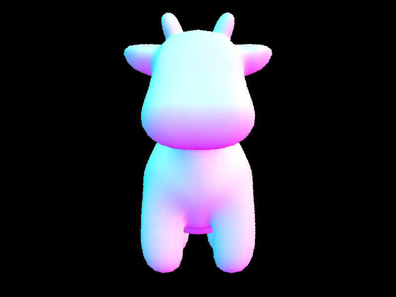
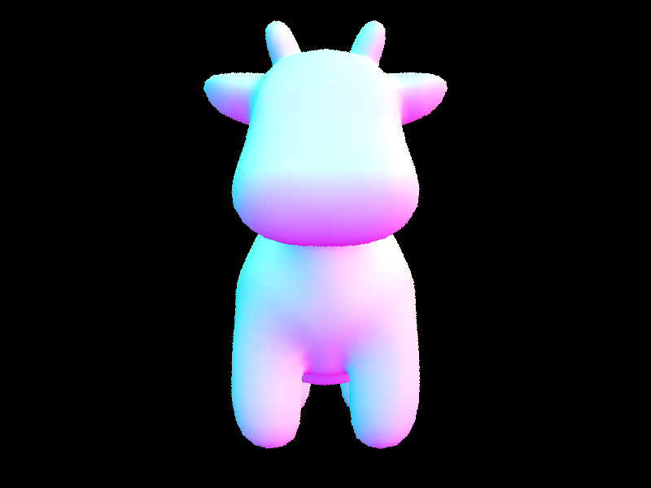

Overview
We implemented algorithms for rendering a 3D scene. We implemented ray generation and ray triangle intersection in part 1, sped up ray intersections in scenes by implementing BVH construction and intersections in part 2, implemented direct lighting by ray tracing in part 3, implemented indirect lighting using recursive ray tracing in part 4, and finally implemented adaptive sampling in part 5 to reduce unnecessary samples per pixel. We ran into a lot of problems along the way. Some of the problems we faced were int division that was supposed to be float division, bad BVH construction heuristics that made it impossible to render some scenes, which we fixed by improving our heuristic, etc. We also had many little bugs, like forgetting to turn world vectors into object vectors, or intersecting the BVH with the original ray instead of using the generated sample ray. We solved these problems by spending a lot of time debugging and inspecting the renders to determine why they looked the way they did.
Part 1: Ray Generation and Scene Intersection
The ray generation part of the rendering pipeline is determining the color of a camera’s pixel by creating a ray from the camera's origin to a point in the world that represents that pixel value. The way this process works is by understanding the point of view of the camera sensor, which then allows you to understand what point in the world the pixel will map to when shot from the origin. Afterwards, you can rotate the camera’s coordinate system to the world’s. As the ray travels through the world, the primitive intersection parts are relevant to understanding surfaces (and their respective colors). The ray will intersect with a series of surfaces (sofar triangles and spheres). As the ray travels, we want to know which surfaces it intersects with so that we can accurately determine the color and irradiance at that location. The triangle intersection algorithm we used was the Moller Trumbore algorithm from lecture. This algorithm uses very little operations and calculates t and the barycentric coordinates of the intersection at the same time. It solves the equation o + t*d = (1 - b1 - b2) * p0 + b1 * p1 + b2 *p2 (which sets the ray equal to a point in a triangle) using linear algebra.

 

|
|
Part 2: Bounding Volume Hierarchy
The BVH algorithm we designed creates the root node of a given scene and stores the objects and bounding box of the scene. The algorithm then finds the midpoint along a randomly chosen dimension (x or y or z). Then, the algorithm separates all objects in the bounding box based on the object’s centroid and creates a “left” and “right” child for the node. Essentially, our heuristic aims to split the object at the midpoint that creates the most “cube-like” child bounding boxes, with the assumption that objects can be a variety of sizes and a cube would best fit them (versus continuously splitting along a single dimension). We initially tried some other strategies, like picking the dimension with the biggest range to split, but they resulted in poor rendering times, so we switched to random. I decided to evaluate our BVH on 4 scenes. On bunny.dae, we recorded a 91x speedup with rendering taking 2.42 secs with our BVH and 221.11 without. For cow.dae, we recorded a 26x speedup with rendering taking 0.15 secs with and 3.92 secs without. For dragon.dae, we recorded a 97x speedup with 1.76 secs with and 171.46 secs without. And lastly, for CBlucy.dae, we recorded a 484x speedup with .49 secs with and 237.39 secs without. The more complicated the object, the higher the speedup we see. This is especially evident for CBlucy.dae since the object in the center of the scene has hundreds of thousands of triangles. With the BVH, rays not shooting directly at the object no longer had to check for intersection with every object in the scene. This makes intuitive sense, as the BVH helps prevent redundant checks through every primitive object in the scene. Without the BVH, the rendering time generally increases linearly with the number of triangles, because each ray has to check for an intersection with every triangle. With the BVH, the rendering time should increase logarithmically with the number of triangles because of the tree structure, which we can see with the large speedups from the tests.
Part 3: Direct Illumination
The first implementation of direct lighting was using a uniform distribution over a hemisphere. For randomly sampled rays of a hemisphere, we shot them into the scene to get their incoming radiances and added them up, weighted by the BSDF and Lambert’s cosine law. Then we divided by the number of samples to get the average. We also had to multiply by 2pi at the end to get the lighting to look right. The second implementation of direct lightning was using importance sampling. For each light source, we randomly sampled rays that hit the light source, checked to make sure there was no object in the way, then added up the radiances weighted by the BSDF and Lambert’s cosine law. Additionally, this time we had to divide by the probability because it was not uniform. Finally, we divided by the number of samples to get the average. There is a lot of noise when rendering with 1 or 4 rays. 16 rays has a significant improvement, and 64 rays has a huge improvement. With 1 and 4 rays, it is really hard to make out the shadow of the dragon. With 16 rays and 64 rays, the shadow can be seen. In other areas with shadows, like under the dragon’s neck, the shadows are very strong and spotty with less rays, but become very soft with 64 rays. Uniform hemisphere sampling resulted in still a bit of noise. In the bunny picture, the background is still a little noisy. In contrast, using lighting sampling gets rid of pretty much all the noise. The background of the bunny picture is very smooth when rendered with lighting sampling, and the shadows of the bunny also look smoother. Additionally, lighting sampling is faster: it took 32 seconds to render the bunny using uniform sampling, and 22 seconds using lightning sampling.
|
|
|
Part 4: Global Illumination
Our indirect lighting function first checked if the max depth was reached. If it was, the function returned a vector of zeros. Otherwise, it calculated the one bounce radiance of the intersection point. Then, it did russian roulette to determine whether to recurse or not. If it did recurse, it generated a sample direction using sample_f. It casted the ray into the scene, and if the ray intersected with something, we added that intersection’s at_least_one_bounce_radiance to the one bounce radiance, weighted by the bsdf, cosine theta, and the probability of generating the sampled direction, and the probability of surviving the russian roulette.

|
|
Part 5: Adaptive Sampling
Adaptive sampling is a clever strategy to not oversample pixels of your image that do not have much variation by exiting your ray tracing once the illumination for that pixel has “converged.” For example, a wall would look pretty consistent when you shoot many rays, versus a complicated 3D object, so you can use adaptive sampling. Adaptive sampling allows us to realize that there is limited variation in the illumination of the rays that are shot out, and therefore exit ray tracing early. Our algorithm evaluates the number of sample rays for a pixel in batches of 32. After each batch is completed, we determine the mean and variation in the illumination of our rays. If there is a statistically significant amount of variation, then we continue ray tracing. Otherwise, we exit early. In the examples below, you can notice (in red) that there is plenty of sampling near the bunny because of its complicated topology, whereas there is less along the walls.


|
|